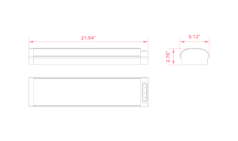
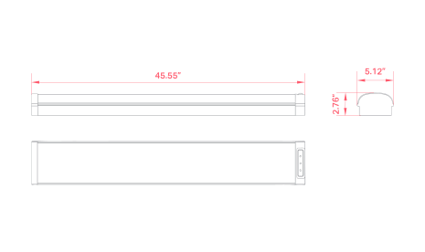
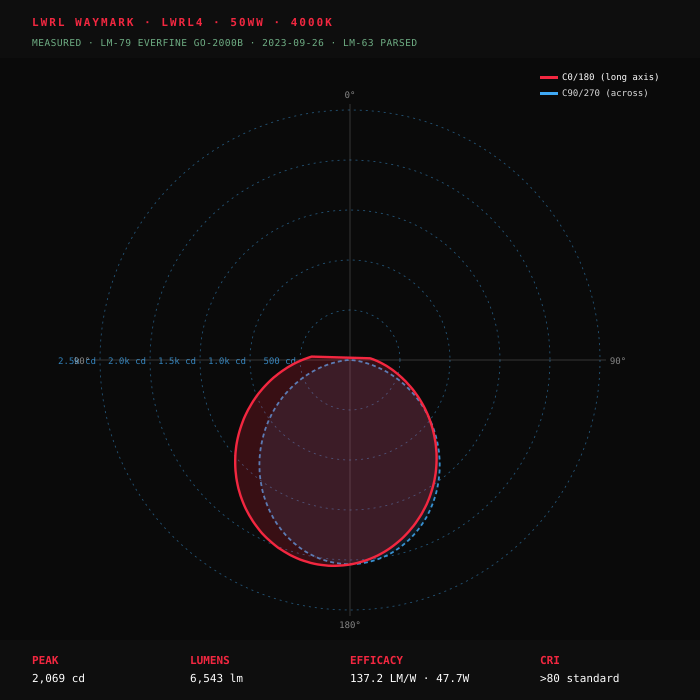
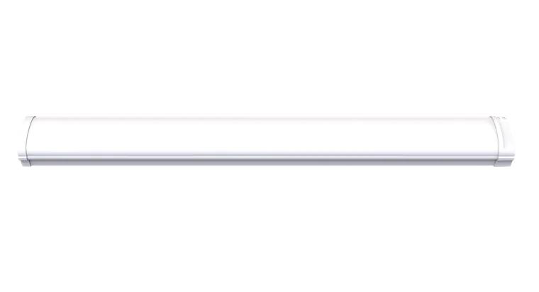

Listed
Listed
RoHS
Premium
Wet Loc
DLC Dual-Listed Stairwell + Linear Ambient — the configurable stairwell / wraparound that qualifies for two utility rebate programs from one SKU. 4-WATTselect × 4-CCTselect dip-switch yields 32 field configurations from 2 catalog SKUs. 125-135 LM/W · 7-year / 75,000-hour warranty.
| 4-WATTselect | Lumens | lm/W | 4-CCTselect | Status |
|---|


Engineering In Motion
Three clips covering what matters on the spec — surface-mount fixture install, the sensor-ready contrⒶLS port, and the 4-CCTselect dip-switch.
Pick the class, watt, and CCT. 32 install configs per catalog SKU class · 64 across both.
Highlights & Features
Seven highlights anchor the Waymark bid sheet — 32 field configurations from a 2-line catalog, 7-year / 75,000-hour warranty, 125-135 LM/W published efficacy, the largest contrⒶLS + constⒶNT ecosystem in any ALG product, 32 LM-79 IES files, and DampGuard™ standard.



contrⒶLS
Every Waymark ships contrⒶLS-Ready with the largest sensor ecosystem in the ALG portfolio — 18 line items across three Bluetooth Mesh platforms: Bi-Level, ⒶCS, and SILVAIR. Snap-in sensor mount installs without tools on every fixture.
contrⒶLS Bi-Level sensors provide reliable, cost-effective occupancy detection with automatic high/low power switching. MSM-BLS (Microwave) + MSP-BLS (PIR) · 10-15Vdc · 13FT max mount · IR Remote commissioning (RM-06S · 45FT range · 2x AAA) · UL Listed · IP20 indoor · daylight harvesting via preset lux level. The cost-effective choice for stairwells, corridors, and parking garages that don't require networked control complexity.
Browse contrⒶLS ecosystem →Photometric Distribution
Real luminous distribution rendered directly from the LM-79 measured IES candela tables — no synthesis. The bundle covers both SKU classes across the full 4-WATTselect × 4-CCTselect matrix · 32 files, EVERFINE GO-2000B tested. C0/180 long-axis and C90/270 across-axis curves on every plot.

Engineered to preserve DLC Dual-Listed rebate eligibility (Stairwell + Linear Ambient) — every contrLS sensor is DLC NLC-qualified, every constNT emergency driver is UL 924 listed.
Pick Length, then 4-WATTselect + 4-CCTselect. Each selection unlocks the next field. SKU resolves live as you go. Two lengths (LWRL2 2×FT · LWRL4 4×FT) cover the stairwell + corridor + back-of-house spec. DIP-switches are field-set at install; selecting a non-default ★ chip ships as a WB factory lock (/W## · /C##) per the datasheet ordering syntax. Required fields marked with *. See the legend below for ★ / QS / MTO / WB meanings.

Everything specifiers, contractors, and project managers need to spec, install, and certify the Waymark — datasheet, installation guide, the 32-file LM-79 IES bundle, and the configuration-stamped submittal PDF. 3 of 5 primary documents live on WorkDrive · SellSheet pending.
Waymark anchors the planoⒶRCH PRO stairwell + wraparound spec. Pair it with Luxmark on grid ceilings, Astra for spec-grade architectural ceilings, and Trackstar for retail accent. One ecosystem, one rep, one spec.



Cross-line companions that cover the rest of the site — fire-rated ceilings, back-of-house strips, parking-lot poles, and pathway bollards. Same controls platform, same rep.


Five US warehouses ship Waymark QuickShip configurations (LWRL2-2035CS · LWRL4-3550CS · standard sensors · constⒶNT EM batteries) in 3-5 days; extended-range ⒶCS ceiling sensors, J-Box hubs, and SILVAIR NLC variants ship MTO in 4-6 weeks. Layout requests come back inside 48 hours. Quotes, sample requests, and rebate matches reply same business day. No portal-as-the-only-channel: you get a person.
Waymark is DLC Listed (Standard tier · verified via live product page) qualifying for utility rebate programs nationwide. The 32 field-config flexibility means a single Waymark SKU can hit the exact wattage tier your local utility incentivizes (most programs have wattage-banded rebate amounts). Add the contrⒶLS by ⒶCS Bluetooth Mesh ecosystem to qualify for the Title 24 § 130.1 NLC rebate adder — typically a $30-50/fixture stack on the base rebate. Linkable design with up to 50FT continuous placement reduces fixture count on long-corridor runs · lower rebate-eligible wattage per linear foot vs competitor non-linkable installs.